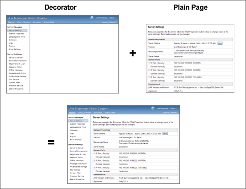

Plugins enhance the functionality of Openfire. This document is a
developer's guide for creating plugins.
The plugin development is now based on Maven(instead of Ant)
What is Maven
Maven is a project management tool which can manage the complete building life cycle.
Maven simplifies and standardizes the project build process. by handling compilation, testing, library dependency, distribution, documentation and team collaboration.
The Maven developers claim that Maven is more than just a build tool. We can think of Maven as a build tool with more features.
Maven provides developers ways to manage project(Builds,Test,Documentation,Reporting,Dependencies,Releases,Distribution,Mailing List).
Structure of a Plugin
Plugins live in the plugins directory of openfireHome. When a plugin
is deployed as a JAR or WAR file, it is automatically expanded into a directory. The files in a
plugin directory are as follows:
The web directory exists for plugins that need to add content
to the Openfire Admin Console. Further details are below.
The plugin.xml file specifies the main Plugin class. A sample
file might look like the following:
The meta-data fields that can be set in the plugin.xml file:
name -- the name of the plugin.
description -- the description of the plugin.
author -- the author of the plugin.
version -- the version of the plugin.
date -- the date the plugin was released. The date must be in the form MM/dd/yyyy, such
as 07/21/2006.
url -- a URL where additional information about the plugin is available.
minServerVersion -- the minimum version of Openfire required
to run the plugin (supported by Openfire 2.1.2 and later). If the
server version is less than the required value, the plugin will not be started.
priorToServerVersion -- the server version up, but not including, on which this plugin can run.
minJavaVersion -- the minimum Java specification version the plugin needs to run.
databaseKey -- if the plugin requires it's own database tables, the databaseKey element should
be set with a schema key name (often the same name as the plugin). Database
schema files for each supported database should then be placed in the database
directory of the plugin. For example, given the key "foo", schema files would be called
"foo_mysql.sql", "foo_oracle.sql", etc. We recommend that you prefix your tables with
"of" (openfire) to avoid conflicts with possible other applications installed in the same
database. The scripts should make an entry into the ofVersion table using the key so that
schema version information can be tracked, e.g.:
INSERT INTO ofVersion (name, version) VALUES ('foo', 0);
databaseVersion -- the database schema version (if a database schema is defined). New plugins
with a database schema should start at version 0. If future versions of the plugin
require updates to the schema, those updates can be defined by creating sub-directories
in the database/upgrade directory for each version number. For example, the directories
database/upgrade/1 and database/upgrade/2 would contain scripts such as
"foo_mysql.sql" and "foo_oracle.sql" that contain the relevant database changes for each
version. Each script should update version information in the ofVersion table, e.g.:
UPDATE ofVersion set version=1 where name='foo';
parentPlugin -- the name of the parent plugin (given as "foo" for the "foo.jar" plugin).
When a plugin has a parent plugin, the parent plugin's class loader will be used instead
of creating a new class loader. This lets plugins work together more closely. A
child plugin will not function without its parent present.
licenseType -- indicates the license agreement that the plugin is governed by. Valid
values are:
"commercial": the plugin is released under a commercial license agreement.
"gpl": the plugin is released under the GNU Public License (GPL).
"apache": the plugin is released under the Apache license.
"internal": the plugin is for internal use at an organization only and will
not be re-distributed.
"other": the plugin is released under a license agrement that doesn't fall into
one of the other categories. The license agreement should be details in the
plugin's Readme.
If the license type is not set, it is assumed to be other.
Several additional files can be present in the plugin to provide additional information to
end-users (all placed in the main plugin directory):
readme.html -- Optional readme file for plugin, which will be displayed to end users.
changelog.html -- Optional changelog file for plugin, which will be displayed to end users.
logo_small.png -- Optional small (16x16) icon associated with the plugin. It can also be a .gif file.
logo_large.png -- Optional large (32x32) icon associated with the plugin. It can also be a .gif file.
Your plugin class must be implement the
Plugin
interface from the Openfire API as
well as have a default (no argument) contructor. The Plugin interface has
methods for initializing and destroying the plugin.
General Plugin Best Practices
When choosing a package name for your plugin, we recommend that you choose
something distinctive to you and/or your organization to help avoid conflicts
as much as possible. For example, if everyone went with org.example.PluginName,
even if PluginName was different, you might start running into some conflicts
here and there between class names. This is especially true when working with
clustering.
.
Modifying the Admin Console
Plugins can add tabs, sections, and pages to the admin console. There
are a several steps to accomplishing this:
An <adminconsole/> section must be added to the
plugin.xml file.
JSP files must be compiled and put into the classpath of the
plugin. A web.xml file containing the compiled JSP
servlet entries must be put into the web/ directory
of the plugin. Note: the Openfire build script
can assist with compiling JSPs and creating the web.xml. This
is detailed below.
Any images required by your JSP pages must live in web/images/
directory. Only GIF and PNG images are supported.
The <adminconsole /> section of plugin.xml defines additional
tabs, sections and entries in the Admin Console framework. A sample
plugin.xml file might look like the following:
In this example, we've defined a new tab "Example", a sidebar section "My Plugin" and two pages: "My Plugin Admin"
and "My Plugin Overview". We've registered my-plugin-admin.jsp respectively my-plugin-overview.jsp
as the pages.
By default, the tabs, sidebars and pages will be presented in the order in which they are defined. You can, however,
define explicit ordering by adding an "order" attribute to each element. It's numeric value defines order. If no
order is specified, the value 0 (zero) is used as a default. In the example above, the items are ordered using this
construct. In the admin console, the "My Plugin Overview" page will be presented before the "My Plugin Admin" page,
as its 'order' value is lower. If neither item had defined the 'order' attribute, the presentation of both pages
would have been reversed (as it would have used to order in which the pages are defined in XML).
You can override existing tabs, sections, and items by using the existing id attribute values in your own
<adminconsole> definition.
Admin Console Best Practices
There are several best practices to consider when making changes to
the Openfire admin console via a plugin. The general theme is
that plugins should integrate seamlessly:
Integrate into existing tabs and sidebar sections whenever possible
instead of creating your own. Only create new tabs for very
significant new functionality.
Don't use the word "plugin" in names of tabs, sidebars and items.
For example, instead of having an item called "Gateway Plugin", it
could be called "Gateway Settings".
Try to match the UI of the existing admin console in your custom
plugin pages.
There is no need to create an admin console entry to show plugin
meta-data. Instead, let Openfire inform the user about which
plugins are installed and provide plugin management.
Writing Pages for the Admin Console
Openfire uses the Sitemesh
framework to decorate pages in the admin console. A globally-defined decorator is applied to
each page in order to render the final output, as in the following diagram:

Creating pages that work with Sitemesh is easy. Simply create valid HTML pages and then
use meta tags to send instructions to Sitemesh. When rendering the output, Sitemesh will
use the instructions you provide to render the decorator along with any content in the
body of your HTML page. The following meta tags can be used:
pageID -- the ID of the page, which must match an entry in the admin console
XML described above. Either a pageID or subPageID must be specified.
subPageID -- the ID of the sub-page, which must match an entry in the
admin console XML described above. Sub-pages are used for administrative actions
related to a parent page ID. For example, editing or deleting a particular group.
Either a pageID or subPageID must be specified.
extraParams (Optional) -- extra parameters that should be passed in to the page.
For example, on a page to delete a group it might be the ID of the group. Parameters
must be URL encoded.
decorator (Optional) -- overrides the Sitemesh decorator to use for the page.
A decorator named none is available that will simply render the page
without a decorator.
The following HTML snippet demonstrates a valid page:
Using i18n in your Plugins
It's possible to translate your plugin into multiple languages (i18n). To do so, use the following
procedure:
Create a "i18n" directory in the root directory of your plugin.
Add each resource file using the %[plugin_name]%_i18n "_" language ".properties"
naming convention, where [plugin_name] is the name of the plugin directory. See the
translator guide for more information about resource
bundles.
Convert Strings in your JSP files to refer to the internationalized keys. For example:
Internationalize Strings in your Java files using the LocaleUtils class: org.jivesoftware.util.LocaleUtils.getLocalizedString("some.key.name", "[plugin_name]");
Internationalize Strings in your plugin.xml file using the ${var} format: <sidebar id="gateways" name="${plugin.sidebar.name}" description="${plugin.sidebar.description}"> <description>${plugin.description}</description>
Using the Openfire Build Script
The Openfire build script will help you build and develop plugins. It
looks for plugin development directories in the following format:
The build script will compile source files and JSPs and create a valid
plugin structure and JAR file. Put your plugin directories in the src/plugins
directory of the source distribution and then use ant plugins to
build your plugins.
Any JAR files your plugin needs during compilation should be put
into the lib directory. These JAR files will also be copied into
the plugin's generated lib directory as part of the build process.
If you create a src/web/WEB-INF/web.xml file, any servlets registered there
will be initialized when the plugin starts up. Only servlet registrations and servlet
mappings will be honored from the web.xml file. Note: this feature is implemented by
merging your custom web.xml file into the web.xml file generated by the JSP compilation
process.
Implementing Your Plugin
Plugins have full access to the Openfire API. This provides a tremendous
amount of flexibility for what plugins can accomplish. However, there are several integration
points that are the most common:
Register a plugin as a Component.
Components receive all packets addressed to a particular sub-domain. For example,
test_component.example.com. So, a packet sent to joe@test_component.example.com would
be delivered to the component. Note that the sub-domains defined as components are unrelated to DNS entries
for sub-domains. All XMPP routing at the socket level is done using the primary server domain (example.com in the
example above); sub-domains are only used for routing within the XMPP server.
Register a plugin as an IQHandler. IQ handlers respond to IQ packets with a particular element name and
namespace. The following code snippet demonstrates how to register an IQHandler:
IQHandler myHandler = new MyIQHander();
IQRouter iqRouter = XMPPServer.getInstance().getIQRouter();
iqRouter.addHandler(myHandler);
Register a plugin as a
PacketInterceptor to receive all packets being sent through the system and
optionally reject them. For example, an interceptor could reject all messages that contained
profanity or flag them for review by an administrator.
You can store persistent plugin settings as Openfire properties using the
JiveGlobals.getProperty(String) and JiveGlobals.setProperty(String, String) methods. Make
your plugin a property listener to listen for changes to its properties by implementing the
org.jivesoftware.util.PropertyEventListener method.
You can register your plugin as a listener using the PropertyEventDispatcher.addListener(PropertyEventListener)
method. Be sure to unregister your plugin as a listener in your plugin's destroyPlugin() method.
Openfire admin tags
Openfire provides useful JSP tags that can be used. To enable them on a JSP page, simply add: <%@ taglib uri="admin" prefix="admin" %> to the top of your JSP page. The tags include:
<admin:ASN1DER value="${ASN.1 DER certificate as a byte[]}"/> (since Openfire 4.0.0)
will display an ASN.1 DER encoded certificate in an HTML table.
<admin:FlashMessage/> (since Openfire 4.5.0) will display up to three suitably
decorated session attributes on the rendered page. The keys of these session attributes are defined by
FlashMessageTag.SUCCESS_MESSAGE_KEY, WARNING_MESSAGE_KEY and
ERROR_MESSAGE_KEY. This allows messages to be displayed to the user when navigating between
pages.
CSRF protection
Admin pages are liable to CSRF attacks.
Openfire provides facilities to aid plugin authors to protect against these attacks on their admin pages. To
enable CSRF protection:
Set the plugin.xml minServerVersion to 4.5.0 or above as this is when support was added.
Set the plugin.xml csrfProtectionEnabled to true to enable CSRF protection for
the plugin. This will;
Guard against CSRF attacks for all requests to admin pages except GET requests
Set a servlet request attribute with key "csrf"
Ensure that GET requests do not modify any settings or change any data as this protection is not
enabled for GET requests
Ensure that any form submitted in the admin page has a field called csrf whose value is that
defined by the request attribute "csrf" - for example: <input name="csrf" value="<c:out value="${csrf}"/>" type="hidden">
If a CSRF attack is detected, the admin page will be reloaded (with a simple HTTP GET request) with
the session attribute FlashMessageTag.ERROR_MESSAGE_KEY set to indicate the problem - it's
therefore advised to include the <admin:FlashMessage/> at the top of your JSP page.
NOTE: It is still important to ensure that all your output is properly escaped using
<c:out> tags or the equivalent.
Plugin FAQ
Can I deploy a plugin as a directory instead of a JAR?
No, all plugins must be deployed as JAR or WAR files. When a JAR or WAR is not present for the plugin,
Openfire assumes that the file has been deleted and that the users wants to destroy the plugin,
so it also deletes the directory.
I've made a change to an existing plugin but can't get it to install when I upload it. Why?
Naming is important. The uploaded JAR must match name with the plugin (i.e. the POM artifactId). For example, the Monitoring
and Archiving Plugin must be uploaded as monitoring.jar rather than my_better_monitoring.jar.
If you're compiling using the maven-assembly-plugin, be sure to look at the config in the example plugin.